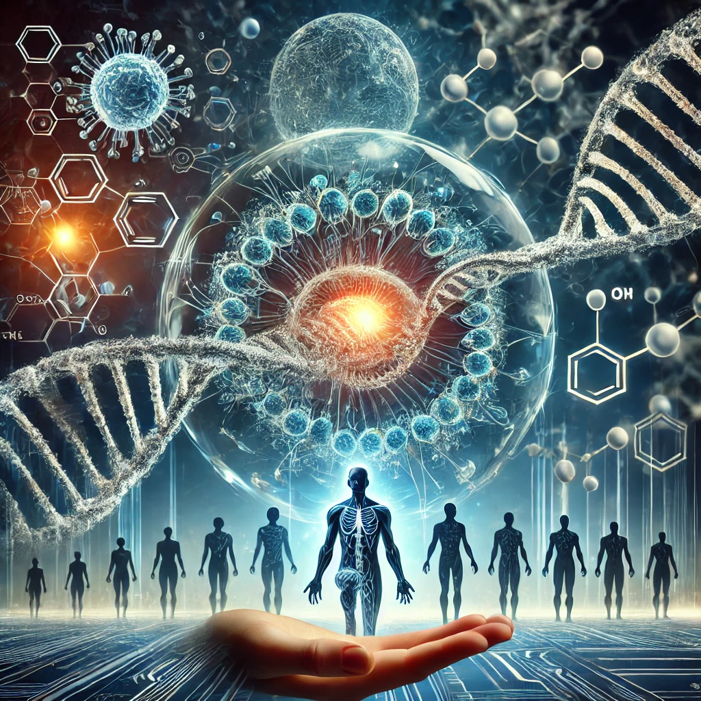

이기적 유전자
목차
작가
리처드 도킨스
출판일
1976. 10. 28.
감상평에 대한 AI그림
이 책은 인간을 포함한 모든 생물은 유전자의 생존을 위한 도구일 뿐이라는 극단적일 수 있는 주장을 펼친다.
특히 책을 읽다보면 인간의 이타적인 행동조차 모두 유전자의 생존 전략이라는 점이 굉장히 흥미롭게 다가온다.
이렇듯 이 책은 생명의 본질과 인간의 존재 의미에 대한 새로운 시각을 제공한다.

감상평에 대한 AI평가
📌 감정 톤: 논리적, 도전적, 철학적
📌 도전적인 시각: 인간을 포함한 모든 생물이 단순히 유전자의 생존을 위한 도구라는 개념이 기존의 일반적인 사고방식에 강한 도전을 가합니다.
📌 지적 호기심: 이타적 행동조차 유전자의 생존 전략이라는 주장이 신선하고 흥미롭게 다가옵니다.
📌 논리적 전개: 유전자 중심적 사고를 바탕으로 인간 행동을 설명하는 과정이 체계적으로 구성되어 있습니다.